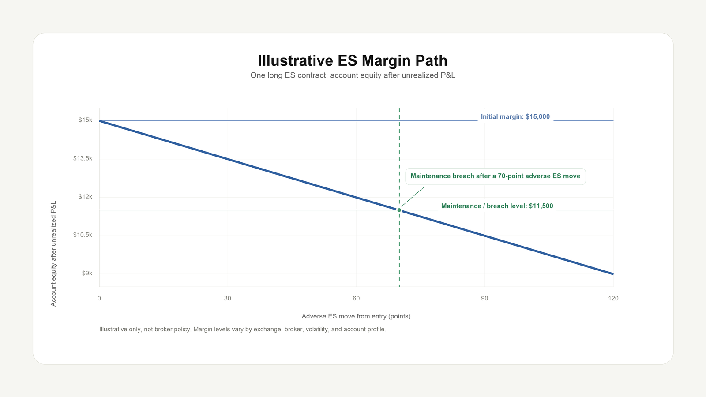

Futures Margin Explained: Initial, Maintenance, Intraday, and Liquidation
Futures margin is not the purchase price of the contract. It is collateral posted to support leveraged exposure whose losses can move faster than account equity.
Core idea: margin is a performance bond. It allows capital-efficient exposure, but it also creates a liquidation path when account equity falls below required levels.
Futures margin is not stock margin
In stock trading, margin usually means borrowing money to buy securities. In futures, margin is better understood as a performance bond. The trader posts collateral, the position is marked to market, and gains or losses flow through the account.
This distinction matters because a trader is not paying the full notional value of the futures contract. A relatively small margin deposit can control a much larger amount of exposure.
The three margin levels traders must separate
Initial margin
The amount required to open a position. If the account does not have enough available equity, the order may be rejected or the trader may need to deposit more funds.
Maintenance margin
The minimum equity level required to keep the position open. Falling below maintenance can trigger a margin call or risk action.
Intraday margin
A broker-specific lower requirement for positions expected to be closed during the day. It can change around market stress, close, or event risk.
House margin
The broker may require more than the exchange minimum based on product volatility, client profile, concentration, or operational risk.
ES example: representative liquid benchmark exposure
E-mini S&P 500 futures use the symbol ES. ES is a benchmark, highly traded representative equity-index futures contract, which makes it useful for explaining notional exposure and margin mechanics. The contract multiplier is $50 times the S&P 500 Index. If ES trades near 7,200, one contract represents about $360,000 of notional exposure.
That does not mean the trader deposits $360,000. The trader posts margin. This is why one small index move can become a large account-level event.
| ES move | P&L per contract | Why it matters |
|---|---|---|
| 1 point | $50 | Base point value |
| 10 points | $500 | Normal intraday noise can matter |
| 30 points | $1,500 | Can materially reduce margin excess |
| 50 points | $2,500 | Can trigger risk action for undercapitalized accounts |

When does auto-liquidation happen?
Auto-liquidation is broker-specific, but the risk logic is usually similar. The account has open exposure, unrealized losses reduce equity, equity approaches or breaches required margin, and the trader does not reduce exposure or add funds quickly enough. The broker then liquidates to reduce the probability of a debit balance.
From a trader perspective, forced liquidation is painful because it can happen during fast markets. From a brokerage perspective, it is a necessary control because a futures account can lose more than posted collateral when markets gap or liquidity deteriorates.
Margin is not a comfort zone. It is the line where the broker starts asking whether the account can survive the next adverse move.
Brokerage risk view
A brokerage risk team does not only ask whether a client is profitable. It asks whether the account can withstand a stress move without creating exposure for the firm or clearing chain.
- Margin sufficiency: current equity versus initial, maintenance, intraday, and house margin.
- Concentration: position size relative to account equity, product liquidity, and client behavior.
- Volatility regime: whether recent volatility makes historical margin assumptions too soft.
- Liquidation quality: whether positions can be closed without severe slippage.
- Event risk: CPI, FOMC, payrolls, inventory reports, geopolitical shocks, and product-specific events.